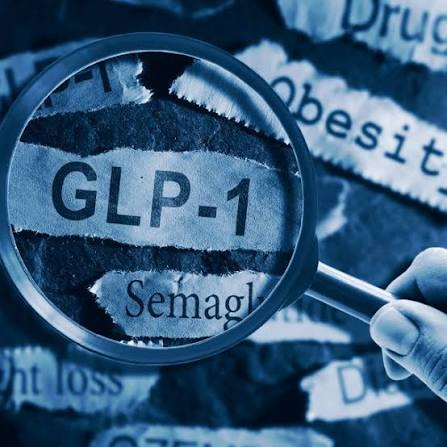
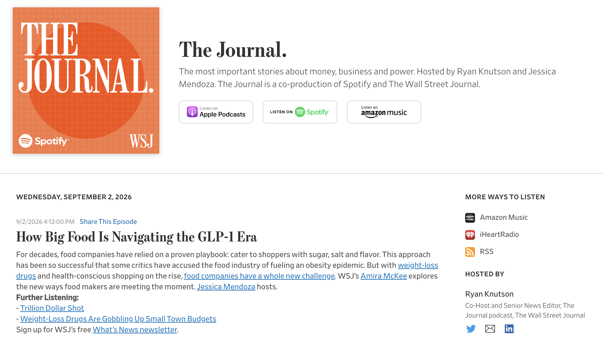
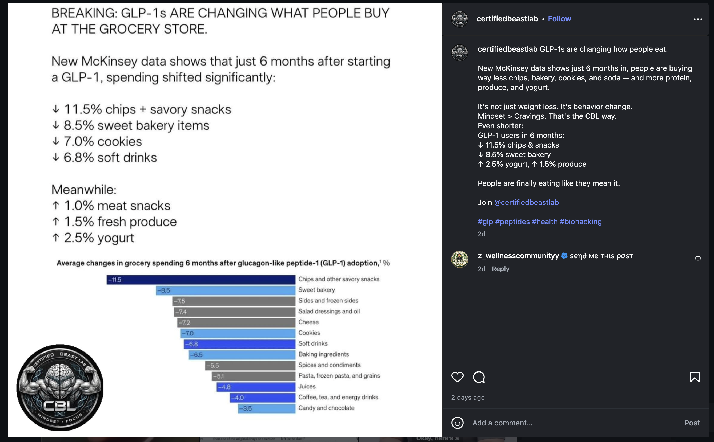

The Price Tag
This capture shows the cost of obesity itself. I was astounded by the percentage of US Adults living with obesity (40%) and the cost associated with this medical condition ($445 billion).


GLP-1s are proving they can genuinely change lives—but whether they're a lasting medical breakthrough or just the next health fad depends on factors we don't have the full picture on yet. We're still figuring out how safe they really are long-term, who can actually access them, and whether people can use them without it backfiring. Lap-Bands were sold as the perfect solution for weight loss that were going to help everyone, but a couple decades later, we know that they have less than a 20% success rate. On the other side, Viagra began its life as a simple blood pressure treatment but went on to make huge, lasting waves. What fate will GLP-1s have in the long term? My goal is that by the end of this project, I will be able to make an educated argument for one side or the other.



